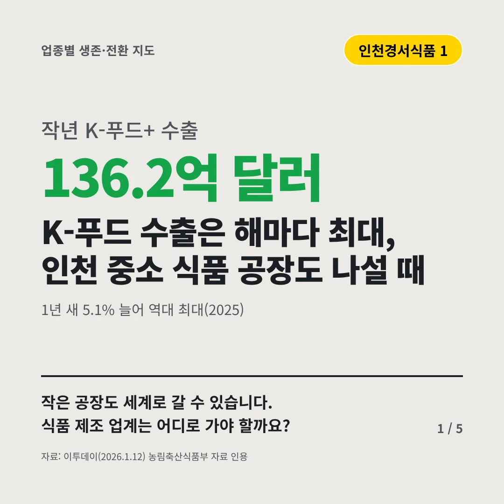
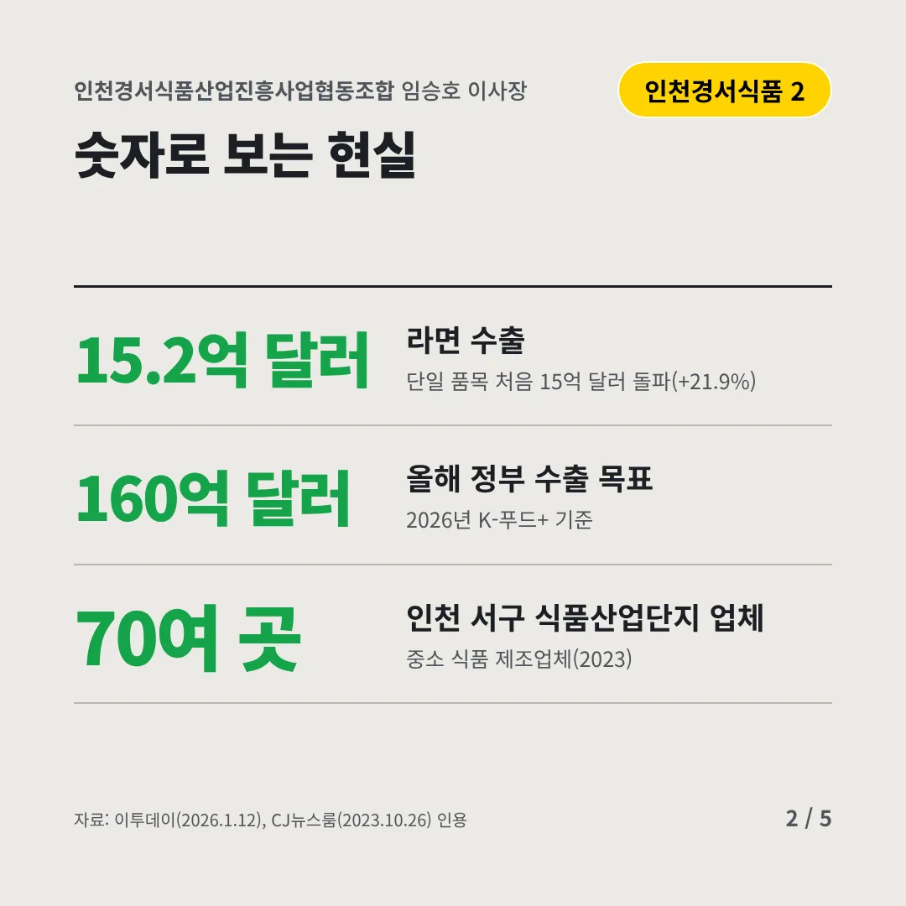
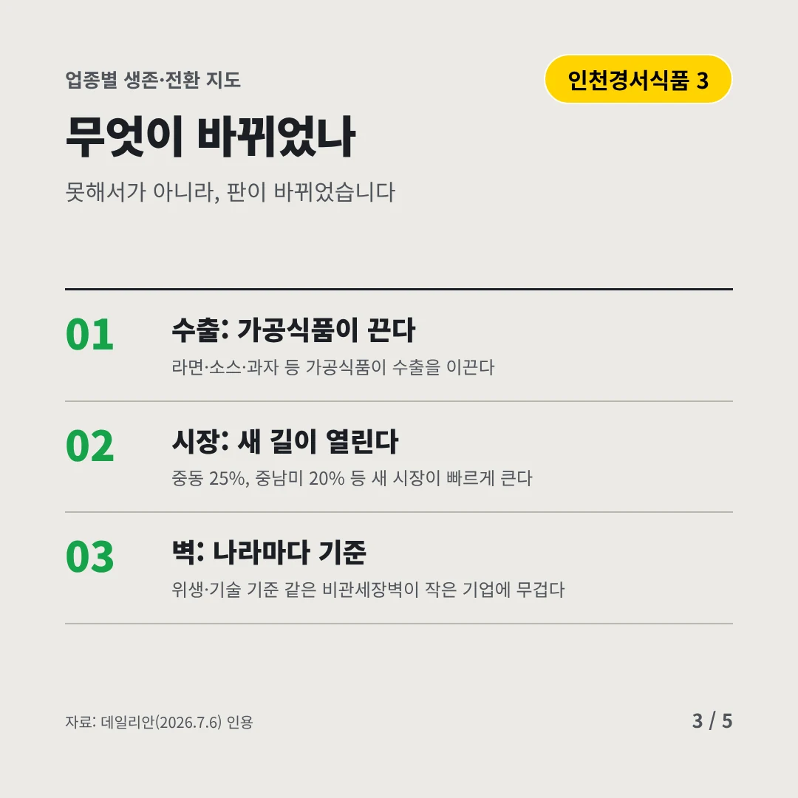
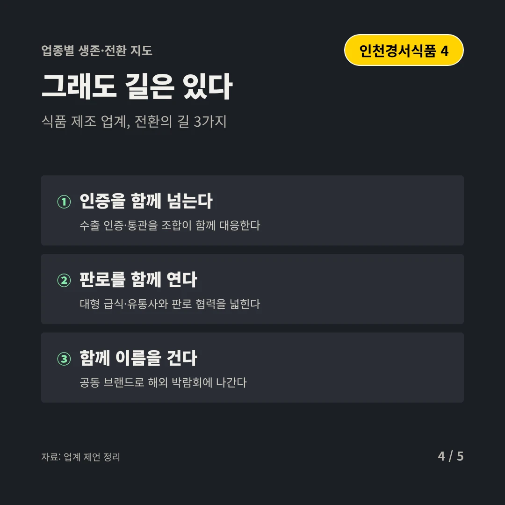
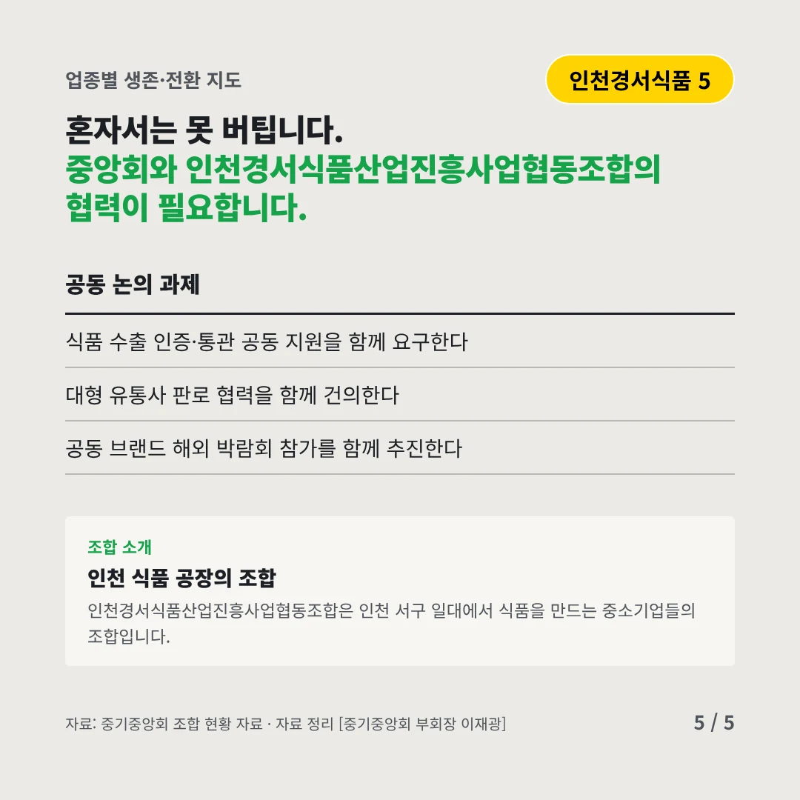
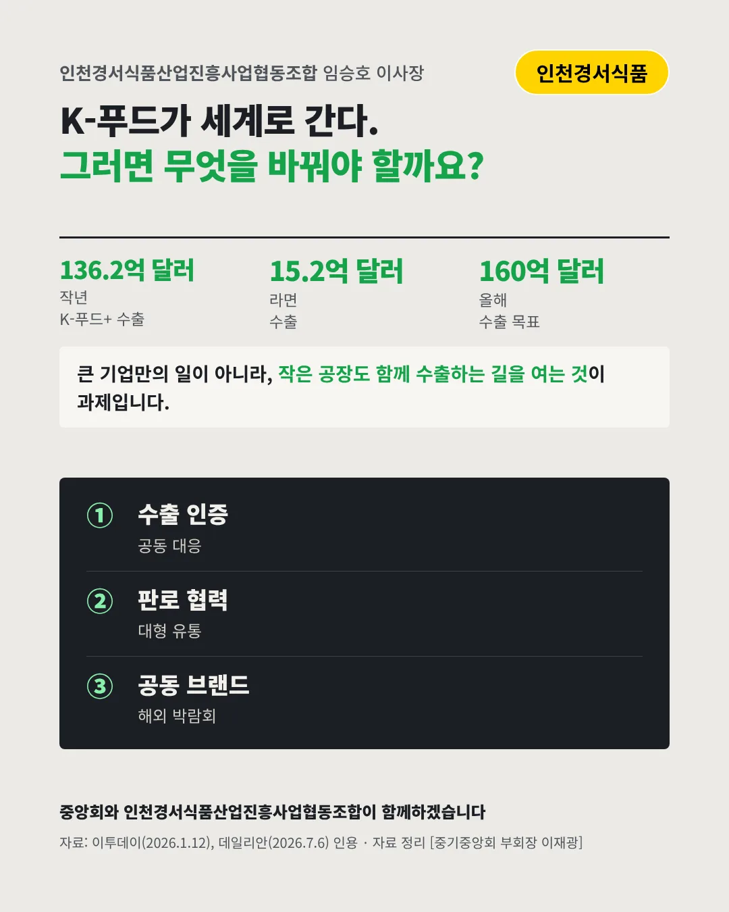

인천경서식품산업진흥사업협동조합
K-푸드 수출은 해마다 최대, 인천 중소 식품 공장도 나설 때
136.2억 달러 작년 K-푸드+ 수출






작은 공장도 세계로 갈 수 있습니다. 식품 제조 업계는 어디로 가야 할까요?
숫자로 보는 현실
- 15.2억 달러라면 수출단일 품목 처음 15억 달러 돌파(+21.9%)
- 160억 달러올해 정부 수출 목표2026년 K-푸드+ 기준
- 70여 곳인천 서구 식품산업단지 업체중소 식품 제조업체(2023)
무엇이 바뀌었나
- 수출: 가공식품이 끈다라면·소스·과자 등 가공식품이 수출을 이끈다
- 시장: 새 길이 열린다중동 25%, 중남미 20% 등 새 시장이 빠르게 큰다
- 벽: 나라마다 기준위생·기술 기준 같은 비관세장벽이 작은 기업에 무겁다
그래도 길은 있다
- 인증을 함께 넘는다수출 인증·통관을 조합이 함께 대응한다
- 판로를 함께 연다대형 급식·유통사와 판로 협력을 넓힌다
- 함께 이름을 건다공동 브랜드로 해외 박람회에 나간다
한 장 요약

조합 소개
인천경서식품산업진흥사업협동조합은 인천 서구 일대에서 식품을 만드는 중소기업들의 조합입니다.
자료: 이투데이(2026.1.12), CJ뉴스룸(2023.10.26), 데일리안(2026.7.6)